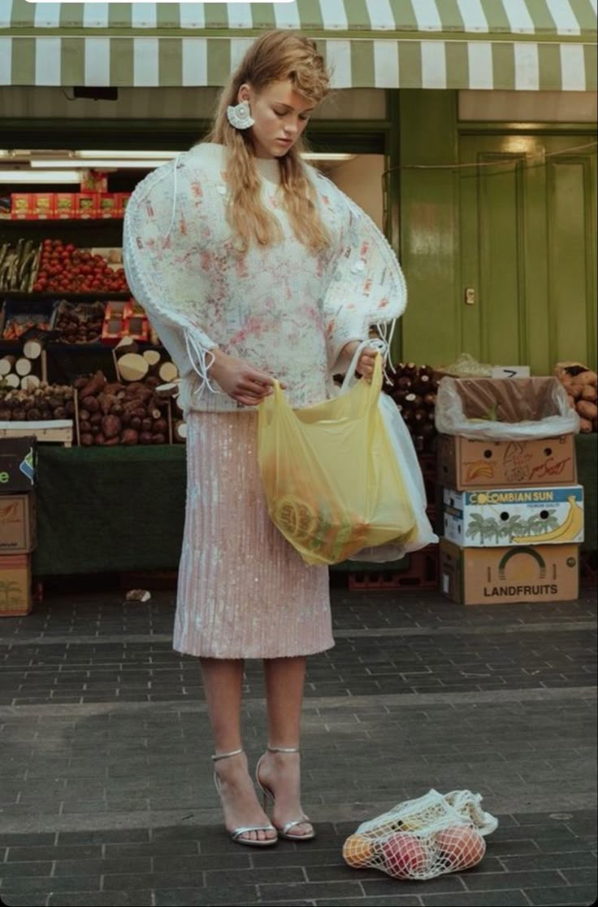

Created in 2025 by fashion lovers, for fashion lovers. Stitches magazine & blog was created as a passion project by 19 year old graphic design student Ella Kuhlman. The purpose of our blog is to share fashion news, trend predictions, and authentic product recommendations. As a small platform we pride ourselves in providing authentic, non-biased content. In today's world, where its hard to understand if reviews are being influenced by sponsorship's and free product we can assure you that all our information is authentic. Our platform is dedicated to style and it is our philosophy that its always best to learn how to style what you already own before buying something new.
Born and raised in southern Ontario Canada, Ella Kuhlman has always had a love for fashion. Growing up with hand-me-downs, and thrift store clothes she spent lots of time playing around with what she had, and learning the power of styling clothes; not just wearing them. Into her youth this love of fashion continued and evolved. She continued to develop her own personal style while learning how to sew her own clothing. Today she is studying at the University of Waterloo in their GBDA (global business and digital art) program where her love of fashion and all things beautiful can be seen through her work. The Stitches magazine and blog is her way to share her love of fashion and passion for graphic design.